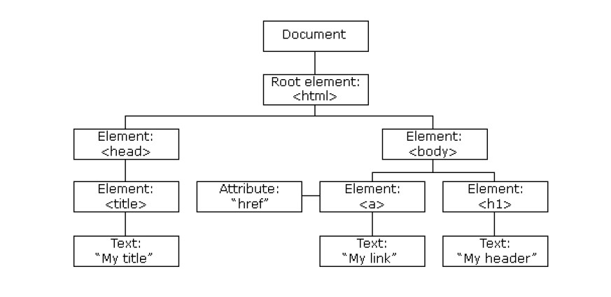
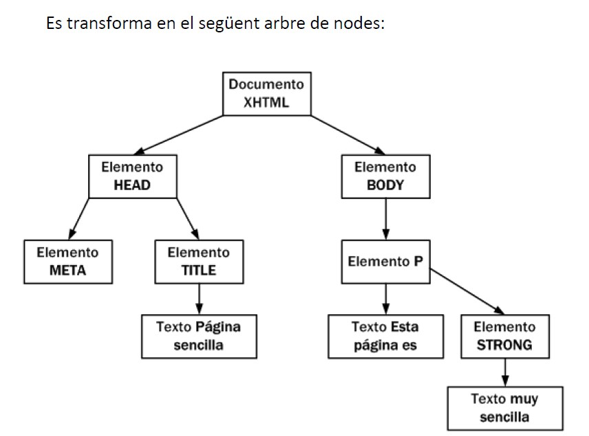

1. Introducción
¿Qué es DOM?
El DOM (Document Object Model) es una API para XML, lo que sin siglas significa que es una capa de programación intermedia que representa un documento y que nos permite modificarlo. En otras palabras, es una serie de funciones y procedimientos que nos permiten trabajar sobre un modelo abstracto de un documento, sirviendo como medio de comunicación entre nuestro lenguaje de programación (en este caso JavaScript) y los contenidos del documento.
Cuando una página web es cargada, el navegador crea un Modelo de Objetos del Documento (DOM)
Cada uno de los elementos (etiquetas) que se encuentran en el archivo .html se convierte en un nodo. Estos nodos están relacionados con una relación padre-hijo, de manera que un nodo padre puede tener muchos nodos hijos, pero un nodo hijo solo puede tener un nodo padre. Es por eso que también se le conoce como árbol DOM. El nodo raíz del cual surge todo el árbol de nodos se llama document.
Ejemplo 1: Veamos en este ejemplo, si cargamos en el navegador este archivo html
<!DOCTYPE html>
<html>
<head>
<title>"My title"</title>
</head>
<body>
<a href="#">My link</a>
<h1>My header</h1>
</body>
</html>
automáticamente se creará este árbol de nodos.

La creación automática por parte del navegador de Document Object Model (DOM) es una de las innovaciones que más ha influido en el desarrollo de las páginas web dinámicas y de las aplicaciones web más complejas. DOM permite a los programadores web acceder y manipular los elementos HTML, creando, modificando o eliminándolos.
DOM se ha convertido en una utilidad disponible para la mayoría de lenguajes de programación (Java, PHP, JavaScript) y las únicas diferencias se encuentran en la forma de implementarlo.
2. Árbol de nodos
Una de las tareas habituales en la programación de aplicaciones web con JavaScript consiste en la manipulación de las páginas web.
De esta manera, es habitual obtener el valor almacenado por algunos elementos (por ejemplo, los elementos de un formulario), crear elementos (párrafos, <div>, etc.) de forma dinámica y añadirlos a la página, o aplicar animaciones a un elemento (hacerlo aparecer/desaparecer, desplazarlo, etc.).
Todas estas tareas son muy sencillas gracias a DOM. Por eso, los navegadores web transforman automáticamente todas las páginas web en una estructura más eficiente de manipular.
Esta transformación la hacen todos los navegadores de forma automática y nos permite utilizar las herramientas de DOM de forma muy sencilla.
DOM transforma todos los documentos HTML en un conjunto de elementos llamados nodos, que están interconectados y representan los contenidos de las páginas web y las relaciones entre estos. Por su aspecto de árbol con una única raíz y múltiples ramas, la unión de todos los nodos se llama "árbol de nodos".
El DOM no es parte de JavaScript; de hecho, puede ser utilizado por otros lenguajes de programación. Aun así, DOM está íntimamente ligado a JavaScript, ya que este lo utilizará para acceder y modificar las páginas web dinámicamente.
Ejemplo 2: Obtén el árbol de nodos de la siguiente página HTML sencilla.
<!DOCTYPE html>
<html>
<head>
<meta charset="UTF-8" />
<title>Página sencilla</title>
</head>
<body>
<p>Esta página es <strong>muy sencilla</strong></p>
</body>
</html>
Se transforma en el siguiente árbol de nodos:

En el esquema anterior, cada rectángulo representa un nodo DOM y las flechas indican las relaciones entre nodos. Dentro de cada nodo, se incluye el tipo (que se verá más adelante) y el contenido. Un documento HTML que se carga en el navegador se convierte en un objeto document. Este objeto es el nodo raíz y propietario de los otros nodos.
A partir de este nodo raíz, cada etiqueta HTML se transforma en un nodo de tipo "Elemento". La conversión de etiquetas en nodos se hace de forma jerárquica. Por ejemplo:
- Del nodo raíz solo pueden derivar los nodos
HEADiBODY. - A partir de esta derivación inicial, cada etiqueta HTML se transforma en un nodo que deriva del nodo correspondiente a la etiqueta padre.
La transformación de los elementos HTML habituales genera dos nodos:
- Nodo de tipo "Elemento" (correspondiente a la propia etiqueta HTML).
- Nodo de tipo "Texto" que contiene el texto cerrado por esta etiqueta HTML.
Ejemplo 3: Obtén el árbol de nodos de las siguientes etiquetas:
<title>Pàgina sencilla</title>
Genera los siguientes nodos:
- Nodo de tipo "Elemento" correspondiente a la etiqueta
<p>. - Nodo de tipo "Texto" con el contenido textual de la etiqueta
<p>.
Si el contenido de <p> incluye en su interior otra etiqueta HTML, esta etiqueta interior se transforma en un nodo de tipo "Elemento" que representa la etiqueta <strong> y que deriva del nodo anterior. El contenido de la etiqueta <strong> genera otro nodo de tipo "Texto" que deriva del nodo generado por <strong>.
Transformación automática en árbol de nodos
La transformación automática de la página en un árbol de nodos siempre sigue las mismas reglas:
- Las etiquetas HTML se transforman en dos nodos:
- El primer nodo es la propia etiqueta.
- El segundo nodo es el hijo del primero y consiste en el contenido textual de la etiqueta.
- Si una etiqueta HTML se encuentra dentro de otra, los nodos generados serán hijos de su etiqueta padre.
Las páginas HTML habituales producen árboles con miles de nodos. Aun así, el proceso de transformación es rápido y automático, y las funciones proporcionadas por DOM permiten acceder a cualquier nodo de la página de forma sencilla e inmediata.
3. Nodos
Los nodos son los elementos sobre los cuales se construyen las conexiones del árbol DOM. Pueden tener relación de padre, hijo o hermano:
- Padre (parent): Todos los nodos solo tienen un padre, excepto la raíz que no tiene porque es el nodo superior.
- Hijo (child): Un nodo puede tener un número indeterminado de hijos (
ChildNodes()). - Hermano (sibling): Son nodos con el mismo padre.
En esta imagen se pueden ver los nodos y las relaciones.
En el esquema siguiente se puede ver la estructura general de nodos de un documento.

3.1. Propiedades de los nodos
Independientemente del tipo de nodo, hay una serie de propiedades generales que comparten. La tabla siguiente muestra algunas de estas propiedades:
| Propiedad | Descripción | Devuelve |
|---|---|---|
nodeName |
El nombre del nodo, dependiendo del tipo de nodo. | Una cadena literal |
nodeValue |
El valor del nodo, dependiendo del tipo de nodo. | Una cadena literal |
nodeType |
Un número que representa el tipo de nodo. | Un número del 1 al 12 |
ownerDocument |
El documento al cual pertenece el nodo. | El documento |
firstChild |
El primer hijo del nodo. | Un nodo |
lastChild |
El último hijo del nodo. | Un nodo |
childNodes |
Una lista de los hijos del nodo. | Una matriz de nodos |
previousSibling |
El hermano anterior al nodo o null si es el primer hijo. |
Un nodo |
nextSibling |
El hermano siguiente al nodo o null si es el último hijo. |
Un nodo |
hasChildNodes |
Indica si el nodo tiene hijos o no. | Un booleano |
atributos |
Una lista con los atributos del nodo. | Una matriz de atributos |
Tipos de nodos
La especificación completa de DOM define 12 tipos de nodos, aunque las páginas HTML habituales se pueden manipular manejando solo cuatro o cinco tipos:
- Document: Nodo raíz del cual derivan todos los otros nodos del árbol.
- Element: Representa cada una de las etiquetas HTML Es el único nodo que puede contener atributos y del cual pueden derivar otros nodos.
- Attr: Se define un nodo de este tipo para representar cada uno de los atributos de las etiquetas HTML, es decir, uno por cada par atributo=valor.
- Text: Nodo que contiene el texto cerrado por una etiqueta HTML.
- Comment: Representa los comentarios incluidos en la página HTML.
Los otros tipos de nodos existentes son: DocumentType, CDataSection, DocumentFragment, Entity, EntityReference, ProcessingInstruction i Notation.
Para más información, visita la documentación de Mozilla.
Elementos añadidos
Ejemplo de código JavaScript
// Seleccionar un elemento por id
const title = document.getElementById('title');
console.log(title.innerText); // Muestra el texto del elemento con id "title"
// Añadir un nuevo elemento a la página
const newParagraph = document.createElement('p');
newParagraph.textContent = 'Este es un párrafo dinámico.';
document.body.appendChild(newParagraph);
// Cambiar el color de un elemento existente
title.style.color = 'blue';
// Añadir un evento
newParagraph.addEventListener('click', () => {
alert('¡Has hecho clic en el párrafo!');
});
Héctor Martínez Juan 1º DAM Semipresencial